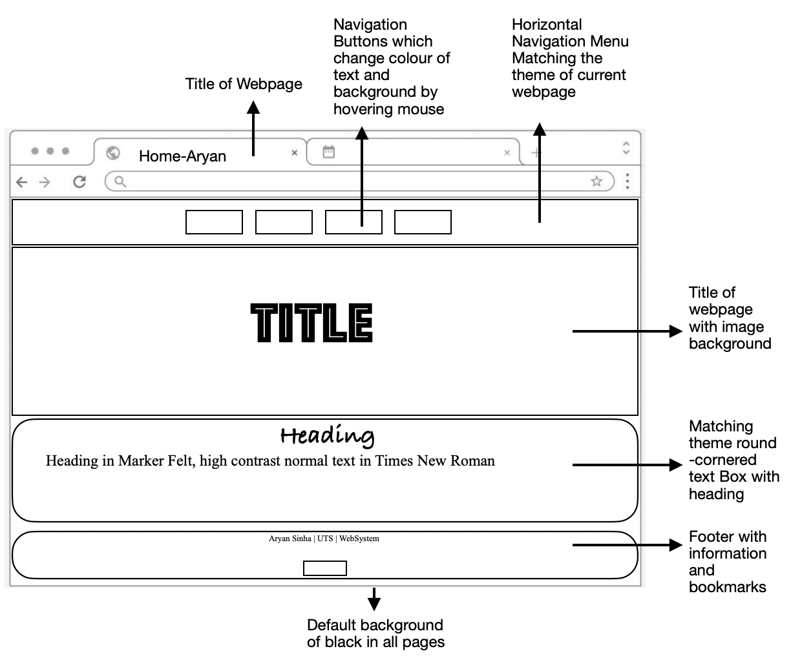

| CSS Class/ID | Description | Alternative used in different Webpage | Alternative Description |
|---|---|---|---|
| .nav | For defining the horizontal list of Navigation Menu with Black background by default | #navfuture, #navpast, #navcomm | for defining the image background and custom RGB colour used in navigation menu of 'Future' and 'Past' webpages respectively. |
| .nav2 | for defining the text colour, font and background of the buttons on the navigation bar | .navpast, .navcomm | 'Past' webpage has light theme so text colour and background colour had to be changed so that the buttons are visible |
| .nav:hover | for defining the text colour and background colour change when mouse hovers overs the navigation button | .navpast:hover, .navcomm:hover | for defining the light-themed colour change when mouse hovers over the navigation buttons in 'Past' webpage |
| .indexheading | for defining the text colour, font, size, family, alignment and padding of text box heading | .futureheading, .commentheading, .pastheading | for defining the text colour, font, size, family, alignment and padding of text box heading of different webpages according to their themes |
| .shadow | for defining round-cornered text box's border radius, background colour, padding, margin, opacity and border type | .pastshadow, .commentsshadow, .futureshadow | for defining round-cornered text box's border radius, background colour, padding, margin, opacity and border type of different webpages according to their themes |
| .foot | for defining round-cornered footer's border radius, background colour, padding, margin, opacity and border type | .footfuture, .footcomm, .footpast | for defining round-cornered footer's border radius, background colour, padding, margin, opacity and border type of different webpages according to their themes |
| table,th,td | for defining the colour, border and collapse of tables used | - | - |
| .button:link, .button:visited | for defining the bookmark buttons at the end of the page | #buttonpast, #buttonfuture, #buttoncomm | for defining the bookmark buttons of different webpages according to their themes |
| Home Page | Past | Future | Comments | |
|---|---|---|---|---|
| Colour | Black and White | Blue and White | Blue and Black | Red and Black |
| Theme | Scenic | Minimalistic | Star Wars and Futuristic | Gaming |
Aryan Sinha | University of Technology Sydney | 31268 Web Systems Autumn 2023
Go To Top Overall Design Technical Aspect Aesthetics Accessibility
Overall Design and Structure

All the webpages have "Title" added in the <'head'> section so that the title of the webpage appears on the tab of browsers.
A consistent navigation menu bar at the top of the webpage is used for cycling through the pages. When mouse is hovered over the buttons of navigation bar, text colour and background changes to show which button is being selected.
All the webpages have thematic image with the title of the webpage.
All the text are in text boxes. Rectangular Text boxes were looking too generic. Inspired from Apple's website, all text boxes were made round-cornered by using "border radius" property of CSS. The round-cornered borders are in accordance with the theme of each page.
Basic information, as well as bookmarks [directional buttons] are placed at the bottom of each page and are in accordance with the theme of the webpage.